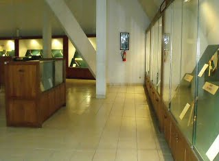

Sebagai informasi untuk- penggemar pusaka keris dan tombak, di Jakarta ada museum
khusus pusaka, yaitu Museum Pusaka Taman Mini Indonesia Indah-(TMII).-Posisinya ada
di dalam area Taman Mini Indonesia Indah-(TMII), Jakarta Timur.-Di museum itu selain
ditampilkan koleksi benda benda pusaka untuk dilihat lihat, juga ada bursa pusaka
keris dan tombak bagi yang berminat mengkoleksi benda benda pusaka, juga disediakan
perangkat perlengkapan keris dan tombak.
Museum Pusaka Taman Mini-:
-1.-Menampilkan koleksi benda benda pusaka untuk dilihat lihat.
2.-Menyediakan jasa penjamasan-/-perawatan, sertifikasi dan konsultasi pusaka-/-tosan
aji.
3.-Menyediakan bursa pusaka keris dan tombak bagi yang berminat mengkoleksi benda
benda pusaka
4.-Menyediakan benda benda perlengkapan pusaka dan jasa servis benda benda
pusaka.
Denah Lokasi Taman Mini-:
https://maps.google.com/maps/ms?ie=UTF8dant=hdanoe=UTF8danmsa=0danmsid=104745560470395595353.00046fc943888aab796a9
Denah posisi museum di dalam area Taman Mini-:
https://tamanmini.com/tmii.php#
Untuk bisa sampai ke lokasi Museum Pusaka, kita
harus masuk dulu ke dalam Taman Mini Indonesia Indah-(TMII)-dengan membayar tiket
masuk sbb-(mudah mudahan harga tiketnya belum berubah)-:
Pintu Gerbang Utama-:
|
Rata rata per orang-(3-tahun keatas)
|
Rp. -9.000,
|
|
Mobil
|
Rp.-10.000,
|
|
Bus/Truk
|
Rp.-15.000,
|
|
Motor
|
Rp. -6.000,
|
|
Sepeda
|
Rp. -1.000,
|
Lokasi Museum Pusaka berada pada jarak yang cukup jauh dari pintu utama Taman Mini,
berada di jalur selatan Taman Mini di antara Museum Keprajuritan- Indonesia dan
Museum Serangga.
Untuk bisa sampai ke lokasi Museum Pusaka, jika kita menggunakan kendaraan pribadi,
sesudah melewati pintu utama Taman Mini dan sampai di ruang luas yang di tengahnya
terdapat bangunan tinggi mirip Tugu Monas, kita harus menelusuri jalan melingkar ke
kiri yang cukup jauh melingkari Taman Mini, melewati Taman Burung, Museum
Keprajuritan, dsb.-
Denah posisi museum-:
https://tamanmini.com/tmii.php#
Museum Keprajuritan.
Museum Keprajuritan cukup jelas kelihatan bangunannya yang menyerupai bangunan
benteng besar yang di bagian depannya ada sebentuk danau dengan kapal kayu besar di
pinggirnya.-
Museum Pusaka.
Sesudah melewati Museum Keprajuritan, barulah kita sampai di Museum- Pusaka yang
posisinya di sebelah kiri, agak jauh dari jalan.-Bangunannya khas, di atas- atapnya
terdapat sebentuk Monumen Keris yang menjulang tinggi ke atas.-
Tetapi sayangnya, bangunan Museum Pusaka tidak begitu jelas kelihatan karena
lokasinya agak jauh dari jalan utama dan bangunannya tertutup pepohonan.
Museum Pusaka.
Setelah memasuki area parkir luas di pinggir danau, sampailah kita di halaman parkir
bangunan Museum Pusaka.
Harga tiket masuk per orang Rp.-7.000,
Waktu buka museum-:Hari Senin s/d Minggu, pk.09.00---16.00-WIB.
Ph.-021-8404155, Fax.021-8404155.
Email-:https://museumpusakatmii.blogspot.com/
Ruang Pameran Lantai Dasar.
Dari sejarahnya, awalnya koleksi pusaka museum merupakan koleksi pribadi Mas Agung,
yang kemudian dihibahkan oleh Sri Lestari Mas Agung kepada Ibu Tien Soeharto- selaku
ketua Yayasan Harapan Kita atau Badan Pengelola dan Pengembangan Taman Mini Indonesia
Indah-(BP2TMII).-
Pembangunan museum dimulai pada tgl.-1-September-1992-dan diresmikan- oleh Presiden
Soeharto pada tanggal-20-April-1993.-
Bangunan berbentuk limas segi lima, dibuat-2-lantai dengan luas lantai
dasar-935-m2-dan lantai atas-600-m2, yang dibangun di atas lahan
seluas-3.800-m2.-
Bangunan museum pusaka terdiri dari-3-ruang utama, yaitu-:
1.-Ruang Pameran Lantai Dasar.
2.-Ruang Pameran Lantai Atas.
3.-Ruang Bursa Tosan Aji.
Museum pusaka dibangun dengan tujuan- melestarikan, merawat, mengumpulkan, serta
menginformasikan benda benda- budaya yang berupa senjata tradisional kepada generasi
penerus agar- merasa bangga terhadap bangsanya dan dapat dimanfaatkan bagi yang
ingin- melakukan studi penelitian mengenai senjata.
Setelah ditambah dengan pembelian, Museum- Pusaka memiliki koleksi senjata
tradisional paling lengkap, mewakili-26- propinsi di Indonesia.-
Jenis jenis pusaka di museum ini yang dominan kelihatan adalah pusaka pusaka- dan
senjata dari jenis keris dan tombak.
Selain menampilkan koleksi benda benda pusaka yang berukuran normal, museum ini juga-
menampilkan koleksi benda benda pusaka yang unik dan ukurannya tidak- lazim.
Foto di samping kiri ini, yang di bagian atas tengah adalah contoh keris yang
panjangnya hampir mencapai-1-meter dan jumlah luk nya banyak dan di- bagian bawah
tengah adalah contoh Keris Bethok dari Jaman Budha yang- berukuran sangat besar,
sedangkan di sebelah kanan dan kiri benda benda itu adalah- benda benda pusaka lain
yang berukuran normal.
Contoh Keris Bethok dari Jaman Budha yang berukuran sangat besar.
Contoh keris yang panjangnya hampir mencapai-1-meter dan jumlah luk nya banyak.
Contoh koleksi golok yang ukurannya besar dan panjangnya hampir
mencapai-2-meter.-
Sedangkan di deretan atasnya adalah contoh contoh koleksi golok yang ukurannya
normal.
Contoh Besalen.
Besalen adalah bangunan beserta perlengkapannya tempat empu keris dan panjak membuat
keris-/-tosan aji.
Contoh foto empu keris dan panjak yang sedang membuat tosan aji.
Selain menampilkan koleksi benda benda pusaka buatan jaman dulu, museum ini juga
menampilkan koleksi benda benda pusaka buatan jaman sekarang-(keris kamardikan).
Koleksi benda benda pusaka buatan jaman sekarang-(keris kamardikan)-itu adalah benda
benda pilihan yang sebagiannya merupakan benda benda cinderamata.
Foto di samping kiri menampilkan koleksi keris yang terbuat dari
kristal -(posisinya di bagian bawah).
Ruang Pameran Lantai Atas.
Ruang Pameran Museum Pusaka lantai atas dibangun dengan luas lantai-600-m2.

Lantai atas Museum Pusaka Taman Mini menampilkan contoh contoh pusaka-/-tosan aji
dari- bermacam macam jaman pembuatannya-(Tangguh Keris), dari jaman
kuno---Kahuripan--- Singasari---Majapahit---Demak---Pajang---Jaman Islam---sampai
jaman- Indonesia menjadi Republik.
Contoh keris dari jaman-(Tangguh)-Kahuripan dan Singasari.
Contoh keris dari jaman-(Tangguh)-Singasari, Madura dan Pajajaran.
Contoh keris dari jaman-(Tangguh)-Majapahit dan Sedayu.
Contoh keris dari jaman-(Tangguh)-Demak dan Mataram.
Contoh keris dari jaman-(Tangguh)-Pajang dan Kartasura.
Contoh bilah bilah keris dari jenis keris lurus dan -keris keris ber luk.
Contoh keris dapur Kebo Lajer.
Contoh keris dapur Pasopati.
Contoh keris dapur Sengkelat.
Contoh keris dapur Sombro.
Contoh keris dapur Tilam Upih.
Contoh mata tombak-/-keris berdapur Banyak Angrem.
Contoh-
ganja
-keris-(tampak atas).
Ruang Bursa Tosan Aji.
Ruang bursa tosan aji adalah ruangan khusus di lantai dasar museum sebagai ruang
bursa yang menyajikan koleksi berbagai macam keris dan tombak bagi peminat tosan
aji.-Di tempat ini juga disediakan perlengkapan keris seperti jagrak keris, mendak,
pendok dan sarung keris.
Secara umum harga jual di bursa ini, menurut Penulis, adalah harga- yang umum berlaku
di kalangan kolektor keris, agak mahal, tetapi sebanding- dengan kondisi fisik dari
benda benda yang dijual yang umumnya- kondisinya masih bagus dan terawat, layak untuk
menjadi benda koleksi.
Ruang Bursa tosan aji ini difungsikan untuk-:
1.-Menyediakan jasa penjamasan-/-perawatan, sertifikasi dan konsultasi pusaka-/-tosan
aji.
2.-Menyediakan bursa pusaka keris dan tombak bagi yang berminat mengkoleksi benda
benda pusaka
3.-Menyediakan benda benda perlengkapan pusaka dan jasa servis benda benda
pusaka.
Petugas administrasi ruang bursa.
Di latar belakang gambar, di samping kiri dan gambar di atasnya, tampak ada banyak
keris koleksi museum yang disimpan dengan posisi terbalik dengan bagian tajamnya di
bawah.
Sayang sekali kondisi penyimpanan keris keris yang terbalik tersebut menyebabkan
koleksi keris keris tersebut tidak dapat dinikmati secara seksama oleh para
pengunjung.-
Macam macam perlengkapan keris berupa sarung keris, pendok, gagang dan mendak
keris.
Perlengkapan keris berupa jagrak dan sarung keris.
Perlengkapan keris berupa jagrak dan sarung keris.
Sebagai informasi tambahan untuk- penggemar dan pemerhati pusaka keris dan tombak,
batu aji dan benda benda unik-/-bertuah, selain Museum Pusaka Taman Mini Indonesia
Indah-(TMII)-seperti diceritakan di atas, di Jakarta juga ada Pasar Batu Aji Rawa
Bening-(sekarang disebut Jakarta Gems Center-(JGC)- Rawa Bening).-Posisinya ada di
seberang Setasiun Jatinegara, Jakarta Timur.
Di tempat itu dijual bermacam macam benda unik dan bertuah.-Selain- batu akik dan
batu mulia, akar akaran, dan batu fosil yang telah berumur hingga ratusan tahun, ada
juga beberapa toko yang menjual keris-/-tombak dan perlengkapan aksesoriesnya.-Tetapi
diperlukan pengetahuan dan kejelian khusus untuk bisa mendapatkan benda benda yang
benar benar berkualitas.-Ulasannya sudah dituliskan dalam halaman tersendiri dengan
judul-:
Pasar Batu Akik
Rawa Bening
.
|

{kind=link}
{kind=link}
{kind=link}
{kind=link}
{kind=link}
{kind=link}
{kind=link}
{kind=link}
{kind=link}
{kind=link}
{kind=link}
{kind=link}
{kind=link}
{kind=link}
{kind=link}
{kind=link}
{kind=link}
{kind=link}
{kind=link}
{kind=link}
{kind=link}
{kind=link}
{kind=link}
{kind=link}
{kind=link}
{kind=link}
{kind=link}
{kind=link}
{kind=link}
{kind=link}
{kind=link}
{kind=link}
{kind=link}
{kind=link}
{kind=link}
{kind=link}
{kind=link}
{kind=link}
{kind=link}
{kind=link}
{kind=link}
{kind=link}
{kind=link}
{kind=link}
{kind=link}
{kind=link}
{kind=link}
{kind=link}
{kind=link}
{kind=link}
{kind=link}
{kind=link}
{kind=link}
{kind=link}
{kind=link}
{kind=link}
{kind=link}
{kind=link}